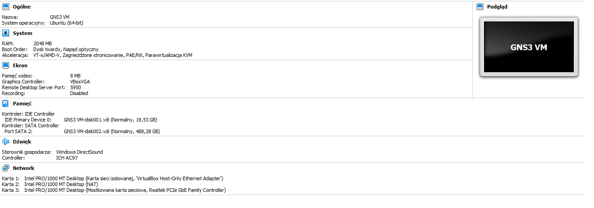
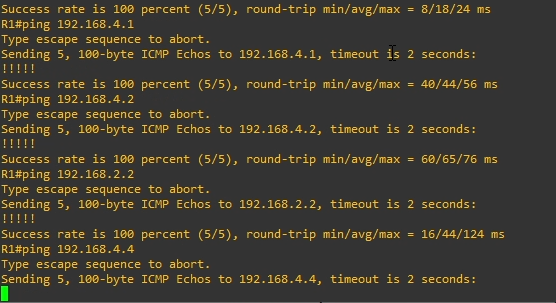
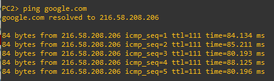
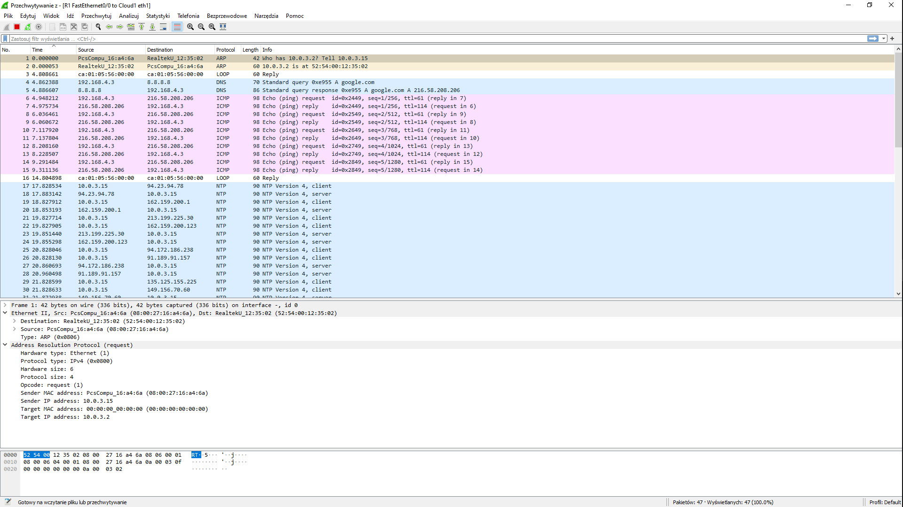
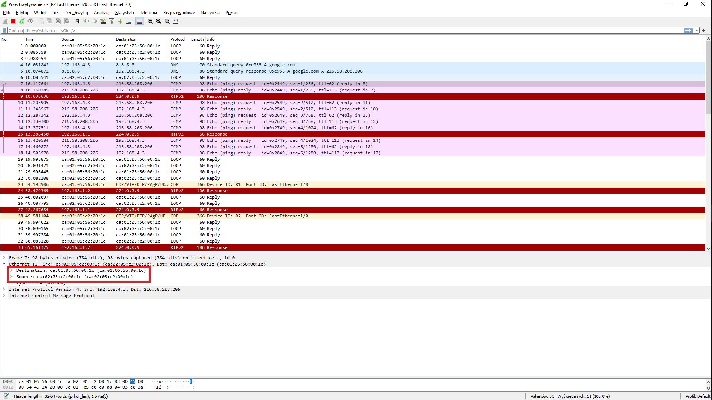

Sprawozdanie Lista 4
| Przedmiot | Technologie sieciowe |
|---|---|
| Prowadzący | Mgr inż. Dominik Bojko |
| Autor | Joanna Kulig |
| Indeks | 261743 |
| Grupa | Czw. 17:05 - 18:45 |
| Kod grupy | K03-76d |
1. Opis zadania.
Celem zadania było skofigurowanie sieci wirtualnej o podanej topologii za pomocą symulatora GNS3. Przy jej realizacji, należało się upewnić, że:
- sieć jest podłączona do zewnętrznej, fizycznej sieci Cloud
- router bezpośrednio połączony z siecią Cloud uzyskuje z niej dynamiczny adres IP
- pozostałe urządzenia podsiadają dynamiczny adres IP w swoich sieciach
- możliwe jest wysyłanie komunikatów "ping" pomiędzy dowolną parą urządzeń oraz na adres zewnętrzny.
Następnie należało ustawić przechwytywanie pakietów na niektórych fragmentach sieci, a następnie je przeanalizować po wysłaniu zapytania "ping google.com" z jednego z urządzeń.
1 Środowisko
GNS3 (ang. Graphical Network Simulator) to emulator sieci, dzięki któremu można tworzyć i testować konfiguracje sieci.
Można go pobrać za darmo z oficjalnej strony GNS3.
1.1. GNS3 VM
Przy instalowaniu programu należy również zainstalować odpowiednie narzędzie do wirtualizacji. Należy go zaiomportować do programu z zakładce Prefercences -> GNS3 VM. Jest ono potrzebme, aby móc wirtualizować serwer oraz podpięte w symulacji urządzenia.
Specyfikacja maszyny wirtualnej w VirtualBox:

Rysunek 1. Specyfikacje maszyny wirtualnej GNS3.
Wybrane dla maszyny karty sieciowe mają znaczenie. Oprócz kart "VBox host-only" oraz NAT trzeba także podpiąć mostkowaną kartę sieciową, która wskazuje na faktyczną kartę w komputerze. GNS3 stanowczo odradza używania do tego celu wifi, zatem została wykorzystana karta ethernetowa.
Dodatkowo ważne jest zaznaczenie opcji Nested VT-x/AMD-V, aby można było symulować maszyny wirtualne odpowiadające urządzeniom dodawanym do naszej topologii.
1.2 Obraz routera
Do zrobienia konfiguracji wykorzystany został router Cisco 7200. Jego obraz jest dostępny do pobrania na GNS3 Marketplace. Należy go zaimportować do programu z zakładce Prefercences -> DSynamips -> IOS routers.
2. Konfiguracja sieci

Rysunek 2. Zadania konfiguracja sieci.
2.1 Komendy do konfiguracji urządzeń.
Konfiguracja routerów:
sh ip int br // pozwala na podpatrzenie interfejsów danego urządzenia
conf t // wejście w tryb konfiguracji urządzenia
int X // przejście do konfiguracji interfejsu X
ip add X Y // ustawienie urządzeniu adres X oraz maskę Y
no shut // uruchamianie interfejsu
ip domain-lookup source-interface X // ustawienie wyszukiwania nazw serwerów przez interfejs X
ip name-server 8.8.8.8 // ustawienie adresu DNS
// RIP (ang. Routing Information Protocol) - służący do wyznaczania najlepszej trasy między źródłem, a celem
// skonfigurowanie routowania zgodnie z RIP w wersji 2
router rip
version 2
// konfiguracja RIP
default-information originate // ustawienie domyślej ścieżki do sieci zewnętrznej
no auto-summary // wyłącza auto-sumowanie ścieżek
network X // informowanie routera o bezpośrednim dostępie do sieci X
end // zakończenie konfiguracji
write // zapisanie danej konfiguracji
Konfiguracja komputerów:
ip X Y // nadanie komputerowi ip wraz z maską X oraz adresu ip routera Y, który łączy go z siecią
ip dns 8.8.8.8 // nadanie adresu serwera DNS
sh ip all // pokazanie ip oraz gateway'a komputera
2.2 Konfiguracja routera brzegowego:
Przy konfiguracji brzegowego routera R1 musimy go połączyć z Cloud'em, w celu uzyskaniu dostępu do internetu.
R1# conf t
R1(config)# int f0/0
R1(config-if)# ip address dhcp // ustawienie adresu ip routerowi przez sieć zgodnie z protokołem dhcp
R1(config-if)# ip nat outside // oznacznie intefejsu jako publiczny
R1(config-if)# no shut
R1(config-if)# end
Następnie ustawiamy adres DNS, aby można było pingować serwery po ich nazwach, zamiast po ich adresach ip.
R1# conf t
R1(config)# ip domain-lookup // ustawienie wyszukiwania nazw serwerów
R1(config)# ip name-server 8.8.8.8
R1(config)# end
Przed konfiguracją innych routerów niż brzegowy, musimy mu przygotować interfejs, dzięki któremu będzie się mógł łączyć z wewnętrznymi urządzeniami.
R1# conf t
R1(config)# int f1/0
R1(config-if)# ip add 192.168.1.1 255.255.255.0
R1(config-if)# ip nat inside // oznacznie intefejsu jako prywatny
R1(config-if)# no shut
R1(config-if)# end
Należy również skonfigurować routing oraz dostęp routera do odpowiednich sieci.
R1# conf t
R1(config)# router rip
R1(config-router)# version 2
R1(config-router)# no auto-summary
R1(config-router)# network 192.168.0.0
R1(config-router)# network 192.168.1.0
R1(config-router)# default-information originate.
R1(config-router)# end
Na końcu musimy ustawić routerowi R1 tzw. access list, czyli listę adresów, od których pakiety może przesyłać na zewnątrz. Podajemy adresy sieci, które chcemy przepuścić oraz odwróconą maskę.
R1# conf t
R1(config)# access-list 10 permit 192.168.1.0 0.0.0.255
R1(config)# access-list 10 permit 192.168.2.0 0.0.0.255
R1(config)# access-list 10 permit 192.168.3.0 0.0.0.255
R1(config)# access-list 10 permit 192.168.4.0 0.0.0.255
R1(config)# end
Zapisujemy konfigurację komendą write.
2.3 Konfiguracja pozostałych routerów:
Routery inne niż brzegowy konfigurujemy w podobny sposób, pomijając jedynie kilka komend, które zostały użyte przy routerze R1.
Nie ma sensu pokazywania konfiguracji każdego z nich, zatem pokażę ją na przykładzie routera R3.
R3# conf t
R3(config)# int f3/0
R3(config-if)# no shut
R3(config-if)# ip add 192.168.3.2 255.255.255.0
R3(config-if)# end
R3# conf t
R3(config)# ip domain-lookup source-interface f3/0
R3(config)# ip name-server 8.8.8.8
R3(config)# end
R3# conf t
R3(config)# int f4/0
R3(config-if)# no shut
R3(config-if)# ip add 192.168.4.1 255.255.255.0
R3(config-if)# end
R3# conf t
R3(config)# router rip
R3(config-router)# version 2
R3(config-router)# no auto-summary
R3(config-router)# network 192.168.3.0
R3(config-router)# network 192.168.4.0
R3(config-router)# end
R3# write
2.4 Konfiguracja switcha:
Urządzenia switch nie wymagają konfiguracji po ich odpowiednim podpięciu.
2.5 Konfiguracja komputera:
Konfiguracja na podstawie komputera PC1.
PC2> ip 192.168.4.3/24 192.168.4.1
PC2> ip dns 8.8.8.8
Sprawdzenie poprawności działania polecenia ping na inne urządzenia w sieci.

Rysunek 3. Polecenie ping na inne adresy w sieci wykonane z urządzenia R1
Sprawdzenie poprawności działania polecenia ping na serwery zewnętrzne z urządzenia PC2.

Rysunek 4. Polecenie 'ping google.com' wykonane z urządzenia PC2
Przechwytywanie i analiza pakietów:
Nasłuchiwanie pakietów należało ustawić na sieciach 192.168.0.0, 192.168.1.0 oraz 192.168.4.0. Jest to zaznaczone na Rysunku 1. za pomocą lupki na danych fragmentach konfiguracji.
Do przechwytywania i podglądania pakietów został użyty program wireshark.
Analizę pakietów przeprowadzimy w wyniku wydania polecenia ping google.com z urządzenia PC2.
Na początku komputer szuka urządzenia, które zostało mu przydzielone jako gateway, w tym celu wysyła zapytanie zgodnie z protokołem ARP. Odpowiada mu router R3 poprzez wysłanie mu swojego adresu MAC.

Rysunek 5. Zapytanie ARP, who has 10.0.3.2? Tell 10.0.3.15.

Rysunek 6. Odpowiedź ARP, 10.0.3.2 is ar 52:54:00:12:35:02.
Adres ten jest potem użyty, aby wysłać zapytanie DNS, które pozwoli nam rozpoznać adres google.com.
Rysunek 7. Zapytanie DNS.
Rysunek 8. Odpowiedź DNS.
Po uzyskaniu odpowiedzi z adresem serwera, komputer PC2 zaczyna na niego wysyłać pakiety.

Rysunek 9. Przesyłane pakiety między R3 a switchem.

Rysunek 10. Przesyłane pakiety między R1 a R2.

Rysunek 11. Przesyłane pakiety między Cloudem a R1.
Na czerwono można zobaczyć jak zmienia się destination i source każdego pakietu ICMP dla danej podsieci. Zaczynając przesyłanie pakietów, PC2 musi je wszystkie przesłać przez router R3. W nim ramki są przepakowywane na nowy destination i source. Nowym sourcem zostaje R3, a destination to następny router na drodze do Clouda. Na ostatnim odcinku (między R1 a Cloudem) można zauważyć, że destination to RealtekU, czyli karta sieciowa ethernet. Potem pakiety idą do danego adresu serwera.